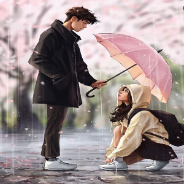
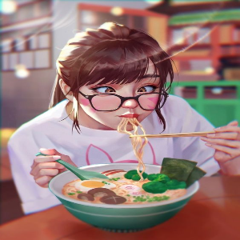
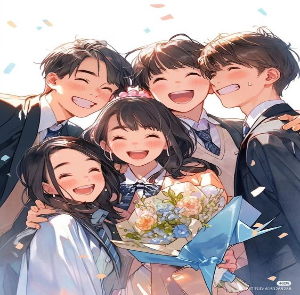
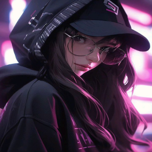
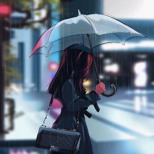
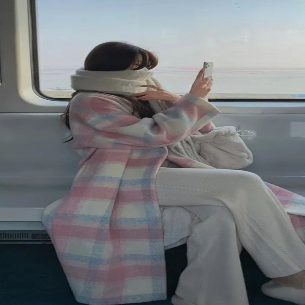

-
Iludimeira
Dorameira
A Iludimeira é aquela pessoa que não pode assistir um dorama, que já quer viver a história irreal contada em todo Dorama que assisti! E acha que a vida real é igual a um Dorama… Toda hora acha que vai aparecer um CEO para se apaixonar por uma pessoa pobre.. Que vai ter sempre um homem romântico para lhe emprestar o guarda–chuva…Que tudo na vida pode ser sempre flores! (Cai na real, dorameira 👌)..
-
Asiafoodmeira
Dorameira
A Asiafoodmeira é uma pessoa que após conhecer um pouco sobre a “cultura” de um país passada através de um dorama, vicia em comidas mostradas em seus dramas preferidos ao ponto de até querer comê-las enquanto assistem. P.S. Todos ficam viciados nessa loucura gostosa (Cai na real, dorameira 🍜💜).
-
Dancingmeira
Dorameira
A Dancingmeira é aquela pessoa que quando começa a ver doramas, como a pesquisar sobre tudo e logo se apaixona pelas músicas do país, virando a louca do POP, k-pop, J-pop e por aí vai… Já vai ser achando a Idol do k-Pop, mas quando realmente sabem dançar, wow!! São incríveis! (Cai na real, dorameira 👯💜).
-
Estudameira
Dorameira
A Estudameira é geralmente uma pessoa que procura estudar sobre a cultura do país que se apaixona, me referindo ao continente asiatico, ok! Então essa pessoa vai mesmo a fundo ao ponto muitas vezes, em até tentar mudar de país, ir estudar em seu cantinho dos sonhos e consumir a fundo a cultura asiática! (Cai na real, dorameira e vê se foca no teu SONHO 👩🎓✈💜).
-
Gameira
Dorameira
A Gameira é a viciada em assistir e jogar, a famosa gamer, que consegue em tempo fora do normal, encontrar tempo para seus hobbys, mas nunca para uma vida social! haha (Cai na real, dorameira, já jogou hoje?👩💻💜).
-
Misterameira
Dorameira
A Misterameira, aah, essas sabem ser discreta, mas as vezes temos que ter atenção com essas dorameiras tão misteriosas, pois seu maior prazer geralmente é esta a ver os doramas psicopatas… (Cai na real, dorameira, é tão bom ser misteriosa, né?🥷💜).
-
Estilosameira
Dorameira
A Estilomeira, wow essas quando descobrem seus estilos baseadas nos doramas que assistiram, são incrivelmente estilosas e na verdade não existe nada melhor do que você mesmo encontrar o seu próprio estilo de ser, agir e vestir (Cai na real, dorameira, nos ensinem por favor?💅💜).